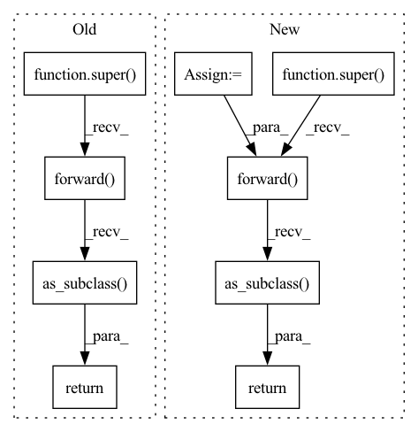

Pattern ID :4387

Before Change
input, self.low_value, self.high_value, self.num_embeddings
).remainder(self.num_embeddings - 1)
return super(Circular, self).forward(indices).as_subclass(MAP)
class Projection(nn.Module):
rEmbedding using a random projection matrix.
After Change
self.weight.copy_(embeddings)
def forward(self, input: Tensor) -> Tensor:
mapped = functional.map_range(
input, self.phase, self.period, 0, self.num_embeddings
)
index = mapped.round().long() % self.num_embeddings
return super().forward(index).as_subclass(self.vsa_model)
class Projection(nn.Module):
rEmbedding using a random projection matrix.
In pattern: SUPERPATTERN
Frequency: 3
Non-data size: 9
Instances
Fragment ID: 16169648
Project Name: hyperdimensional-computing/torchhd
Commit Name: 90c6926d8c62c42ec5f2726007c581213fb41322
Time: 2023-01-22
Author: mikeheddes@gmail.com
File Name: torchhd/embeddings.py
M Class Name: Circular
N Class Name: Circular
M Method Name: forward(2)
N Method Name: forward(2)
M Parent Class: nn.Embedding
N Parent Class: nn.Embedding
M File Name: torchhd/embeddings.py
N File Name: torchhd/embeddings.py
M Start Line: 294
M End Line: 298
N Start Line: 734
N End Line: 738
'>
Before Change
input, self.low_value, self.high_value, self.num_embeddings
).clamp(0, self.num_embeddings - 1)
return super(Thermometer, self).forward(indices).as_subclass(MAP)
class Circular(nn.Embedding):
Embedding wrapper around :func:`~torchhd.functional.circular_hv`.
After Change
self.weight.copy_(embeddings)
def forward(self, input: Tensor) -> Tensor:
index = functional.value_to_index(
input, self.low, self.high, self.num_embeddings
)
index = index.clamp(min=0, max=self.num_embeddings - 1)
return super().forward(index).as_subclass(self.vsa_model)
class Circular(nn.Embedding):
Embedding wrapper around :func:`~torchhd.circular_hv`.
'>
Fragment ID: 16169649
Project Name: hyperdimensional-computing/torchhd
Commit Name: 90c6926d8c62c42ec5f2726007c581213fb41322
Time: 2023-01-22
Author: mikeheddes@gmail.com
File Name: torchhd/embeddings.py
M Class Name: Thermometer
N Class Name: Thermometer
M Method Name: forward(2)
N Method Name: forward(2)
M Parent Class: nn.Embedding
N Parent Class: nn.Embedding
M File Name: torchhd/embeddings.py
N File Name: torchhd/embeddings.py
M Start Line: 228
M End Line: 232
N Start Line: 613
N End Line: 617
'>
Before Change
input, self.low_value, self.high_value, self.num_embeddings
).clamp(0, self.num_embeddings - 1)
return super(Level, self).forward(indices).as_subclass(MAP)
class Thermometer(nn.Embedding):
Embedding wrapper around :func:`~torchhd.functional.thermometer_hv`.
After Change
self.weight.copy_(embeddings)
def forward(self, input: Tensor) -> Tensor:
index = functional.value_to_index(
input, self.low, self.high, self.num_embeddings
)
index = index.clamp(min=0, max=self.num_embeddings - 1)
return super().forward(index).as_subclass(self.vsa_model)
class Thermometer(nn.Embedding):
Embedding wrapper around :func:`~torchhd.thermometer_hv`.
'>
Fragment ID: 16169647
Project Name: hyperdimensional-computing/torchhd
Commit Name: 90c6926d8c62c42ec5f2726007c581213fb41322
Time: 2023-01-22
Author: mikeheddes@gmail.com
File Name: torchhd/embeddings.py
M Class Name: Level
N Class Name: Level
M Method Name: forward(2)
N Method Name: forward(2)
M Parent Class: nn.Embedding
N Parent Class: nn.Embedding
M File Name: torchhd/embeddings.py
N File Name: torchhd/embeddings.py
M Start Line: 168
M End Line: 172
N Start Line: 496
N End Line: 500